Resultados /
pose_v2-boostcomptrack-solo_salmon
Precisión 82,2 % 1690 aciertos, 365 falsos
Recall 74,0 % 594 no detectados
F1 77,9 % IoU ≥ 0.5
IoU medio 0,80 de los aciertos
Error de puntos – de la diagonal de la caja
Tiempo 111 ms por imagen
Modelo best.pt · confianza mínima 0.25 · imagen 1024 px · dataset completo · solo etiquetas salmon
Dónde acierta y dónde se equivoca
0 de 61 imágenes sin ningún error.
En cada imagen: ✓ acierto (IoU ≥ 0.5), FP detección sin etiqueta, FN etiqueta sin detección.
Clic en una imagen para ver cajas, probabilidades y el mapa de atención.
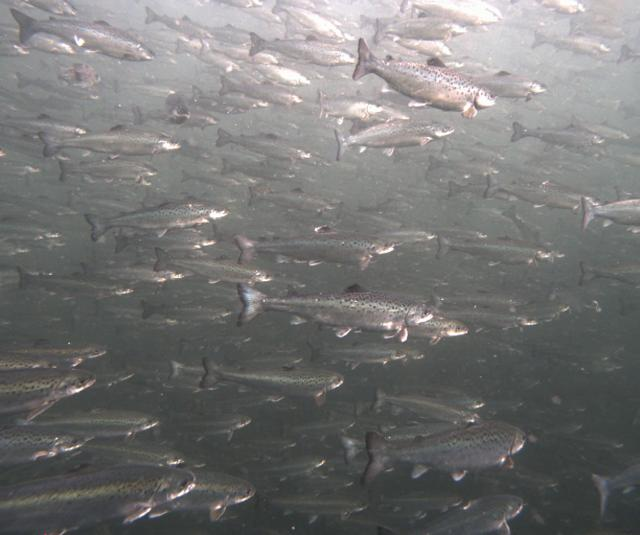
punto 1 punto 2 punto 3 punto 4 punto 1 punto 2 punto 3 punto 4 punto 1 punto 2 punto 3 punto 4 punto 1 punto 2 punto 3 punto 4 punto 1 punto 2 punto 3 punto 4 punto 1 punto 2 punto 3 punto 4 punto 1 punto 2 punto 3 punto 4 punto 1 punto 2 punto 3 punto 4 punto 1 punto 2 punto 3 punto 4 punto 1 punto 2 punto 3 punto 4 punto 1 punto 2 punto 3 punto 4 punto 1 punto 2 punto 3 punto 4 punto 1 punto 2 punto 3 punto 4 punto 1 punto 2 punto 3 punto 4 punto 1 punto 2 punto 3 punto 4 punto 1 punto 2 punto 3 punto 4 punto 1 punto 2 punto 3 punto 4 punto 1 punto 2 punto 3 punto 4 punto 1 punto 2 punto 3 punto 4 punto 1 punto 2 punto 3 punto 4 punto 1 punto 2 punto 3 punto 4 punto 1 punto 2 punto 3 punto 4 punto 1 punto 2 punto 3 punto 4 punto 1 punto 2 punto 3 punto 4 punto 1 punto 2 punto 3 punto 4 punto 1 punto 2 punto 3 punto 4 punto 1 punto 2 punto 3 punto 4 punto 1 punto 2 punto 3 punto 4 punto 1 punto 2 punto 3 punto 4 punto 1 punto 2 punto 3 punto 4 punto 1 punto 2 punto 3 punto 4 punto 1 punto 2 punto 3 punto 4 punto 1 punto 2 punto 3 punto 4 punto 1 punto 2 punto 3 punto 4 punto 1 punto 2 punto 3 punto 4 punto 1 punto 2 punto 3 punto 4 punto 1 punto 2 punto 3 punto 4 punto 1 punto 2 punto 3 punto 4 punto 1 punto 2 punto 3 punto 4 punto 1 punto 2 punto 3 punto 4 punto 1 punto 2 punto 3 punto 4 punto 1 punto 2 punto 3 punto 4 punto 1 punto 2 punto 3 punto 4 punto 1 punto 2 punto 3 punto 4 punto 1 punto 2 punto 3 punto 4 punto 1 punto 2 punto 3 punto 4 punto 1 punto 2 punto 3 punto 4 punto 1 punto 2 punto 3 punto 4 punto 1 punto 2 punto 3 punto 4 punto 1 punto 2 punto 3 punto 4 punto 1 punto 2 punto 3 punto 4 punto 1 punto 2 punto 3 punto 4 punto 1 punto 2 punto 3 punto 4 punto 1 punto 2 punto 3 punto 4 punto 1 punto 2 punto 3 punto 4 punto 1 punto 2 punto 3 punto 4 punto 1 punto 2 punto 3 punto 4 punto 1 punto 2 punto 3 punto 4 punto 1 punto 2 punto 3 punto 4 punto 1 punto 2 punto 3 punto 4 punto 1 punto 2 punto 3 punto 4 punto 1 punto 2 punto 3 punto 4 punto 1 punto 2 punto 3 punto 4 punto 1 punto 2 punto 3 punto 4 punto 1 punto 2 punto 3 punto 4 punto 1 punto 2 punto 3 punto 4 punto 1 punto 2 punto 3 punto 4 punto 1 punto 2 punto 3 punto 4 punto 1 punto 2 punto 3 punto 4 punto 1 punto 2 punto 3 punto 4 punto 1 punto 2 punto 3 punto 4 punto 1 punto 2 punto 3 punto 4 punto 1 punto 2 punto 3 punto 4 punto 1 punto 2 punto 3 punto 4 punto 1 punto 2 punto 3 punto 4 punto 1 punto 2 punto 3 punto 4 punto 1 punto 2 punto 3 punto 4 punto 1 punto 2 punto 3 punto 4 punto 1 punto 2 punto 3 punto 4 punto 1 punto 2 punto 3 punto 4 punto 1 punto 2 punto 3 punto 4 punto 1 punto 2 punto 3 punto 4 punto 1 punto 2 punto 3 punto 4 punto 1 punto 2 punto 3 punto 4 punto 1 punto 2 punto 3 punto 4 punto 1 punto 2 punto 3 punto 4 punto 1 punto 2 punto 3 punto 4 punto 1 punto 2 punto 3 punto 4 punto 1 punto 2 punto 3 punto 4 punto 1 punto 2 punto 3 punto 4 punto 1 punto 2 punto 3 punto 4 punto 1 punto 2 punto 3 punto 4 punto 1 punto 2 punto 3 punto 4 punto 1 punto 2 punto 3 punto 4 punto 1 punto 2 punto 3 punto 4 punto 1 punto 2 punto 3 punto 4 punto 1 punto 2 punto 3 punto 4 punto 1 punto 2 punto 3 punto 4 punto 1 punto 2 punto 3 punto 4 punto 1 punto 2 punto 3 punto 4 punto 1 punto 2 punto 3 punto 4 punto 1 punto 2 punto 3 punto 4 punto 1 punto 2 punto 3 punto 4 punto 1 punto 2 punto 3 punto 4 punto 1 punto 2 punto 3 punto 4 punto 1 punto 2 punto 3 punto 4 punto 1 punto 2 punto 3 punto 4 punto 1 punto 2 punto 3 punto 4 punto 1 punto 2 punto 3 punto 4 punto 1 punto 2 punto 3 punto 4 punto 1 punto 2 punto 3 punto 4 punto 1 punto 2 punto 3 punto 4 punto 1 punto 2 punto 3 punto 4 punto 1 punto 2 punto 3 punto 4 punto 1 punto 2 punto 3 punto 4 punto 1 punto 2 punto 3 punto 4 punto 1 punto 2 punto 3 punto 4 punto 1 punto 2 punto 3 punto 4 punto 1 punto 2 punto 3 punto 4 punto 1 punto 2 punto 3 punto 4 punto 1 punto 2 punto 3 punto 4 punto 1 punto 2 punto 3 punto 4 punto 1 punto 2 punto 3 punto 4 punto 1 punto 2 punto 3 punto 4 punto 1 punto 2 punto 3 punto 4 punto 1 punto 2 punto 3 punto 4 punto 1 punto 2 punto 3 punto 4 punto 1 punto 2 punto 3 punto 4 punto 1 punto 2 punto 3 punto 4 punto 1 punto 2 punto 3 punto 4 punto 1 punto 2 punto 3 punto 4
20240502_084036_17146...
95 ✓ · 36 FP · 31 FN
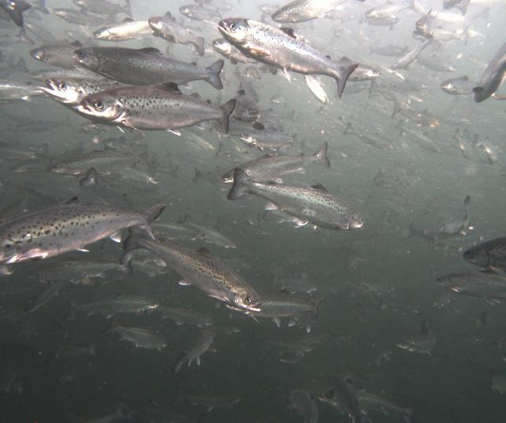
punto 1 punto 2 punto 3 punto 4 punto 1 punto 2 punto 3 punto 4 punto 1 punto 2 punto 3 punto 4 punto 1 punto 2 punto 3 punto 4 punto 1 punto 2 punto 3 punto 4 punto 1 punto 2 punto 3 punto 4 punto 1 punto 2 punto 3 punto 4 punto 1 punto 2 punto 3 punto 4 punto 1 punto 2 punto 3 punto 4 punto 1 punto 2 punto 3 punto 4 punto 1 punto 2 punto 3 punto 4 punto 1 punto 2 punto 3 punto 4 punto 1 punto 2 punto 3 punto 4 punto 1 punto 2 punto 3 punto 4 punto 1 punto 2 punto 3 punto 4 punto 1 punto 2 punto 3 punto 4 punto 1 punto 2 punto 3 punto 4 punto 1 punto 2 punto 3 punto 4 punto 1 punto 2 punto 3 punto 4 punto 1 punto 2 punto 3 punto 4 punto 1 punto 2 punto 3 punto 4 punto 1 punto 2 punto 3 punto 4 punto 1 punto 2 punto 3 punto 4 punto 1 punto 2 punto 3 punto 4 punto 1 punto 2 punto 3 punto 4 punto 1 punto 2 punto 3 punto 4 punto 1 punto 2 punto 3 punto 4 punto 1 punto 2 punto 3 punto 4 punto 1 punto 2 punto 3 punto 4 punto 1 punto 2 punto 3 punto 4 punto 1 punto 2 punto 3 punto 4 punto 1 punto 2 punto 3 punto 4 punto 1 punto 2 punto 3 punto 4 punto 1 punto 2 punto 3 punto 4 punto 1 punto 2 punto 3 punto 4 punto 1 punto 2 punto 3 punto 4 punto 1 punto 2 punto 3 punto 4 punto 1 punto 2 punto 3 punto 4 punto 1 punto 2 punto 3 punto 4 punto 1 punto 2 punto 3 punto 4 punto 1 punto 2 punto 3 punto 4 punto 1 punto 2 punto 3 punto 4 punto 1 punto 2 punto 3 punto 4 punto 1 punto 2 punto 3 punto 4 punto 1 punto 2 punto 3 punto 4 punto 1 punto 2 punto 3 punto 4 punto 1 punto 2 punto 3 punto 4 punto 1 punto 2 punto 3 punto 4 punto 1 punto 2 punto 3 punto 4 punto 1 punto 2 punto 3 punto 4 punto 1 punto 2 punto 3 punto 4 punto 1 punto 2 punto 3 punto 4 punto 1 punto 2 punto 3 punto 4 punto 1 punto 2 punto 3 punto 4 punto 1 punto 2 punto 3 punto 4 punto 1 punto 2 punto 3 punto 4 punto 1 punto 2 punto 3 punto 4 punto 1 punto 2 punto 3 punto 4 punto 1 punto 2 punto 3 punto 4 punto 1 punto 2 punto 3 punto 4 punto 1 punto 2 punto 3 punto 4 punto 1 punto 2 punto 3 punto 4 punto 1 punto 2 punto 3 punto 4 punto 1 punto 2 punto 3 punto 4 punto 1 punto 2 punto 3 punto 4 punto 1 punto 2 punto 3 punto 4 punto 1 punto 2 punto 3 punto 4 punto 1 punto 2 punto 3 punto 4 punto 1 punto 2 punto 3 punto 4 punto 1 punto 2 punto 3 punto 4 punto 1 punto 2 punto 3 punto 4 punto 1 punto 2 punto 3 punto 4 punto 1 punto 2 punto 3 punto 4 punto 1 punto 2 punto 3 punto 4 punto 1 punto 2 punto 3 punto 4 punto 1 punto 2 punto 3 punto 4 punto 1 punto 2 punto 3 punto 4 punto 1 punto 2 punto 3 punto 4 punto 1 punto 2 punto 3 punto 4 punto 1 punto 2 punto 3 punto 4 punto 1 punto 2 punto 3 punto 4 punto 1 punto 2 punto 3 punto 4 punto 1 punto 2 punto 3 punto 4 punto 1 punto 2 punto 3 punto 4 punto 1 punto 2 punto 3 punto 4 punto 1 punto 2 punto 3 punto 4 punto 1 punto 2 punto 3 punto 4 punto 1 punto 2 punto 3 punto 4 punto 1 punto 2 punto 3 punto 4 punto 1 punto 2 punto 3 punto 4 punto 1 punto 2 punto 3 punto 4 punto 1 punto 2 punto 3 punto 4
20240502_084036_17146...
68 ✓ · 24 FP · 29 FN
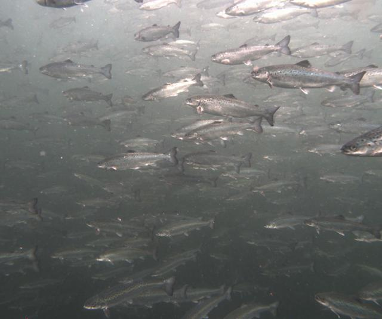
punto 1 punto 2 punto 3 punto 4 punto 1 punto 2 punto 3 punto 4 punto 1 punto 2 punto 3 punto 4 punto 1 punto 2 punto 3 punto 4 punto 1 punto 2 punto 3 punto 4 punto 1 punto 2 punto 3 punto 4 punto 1 punto 2 punto 3 punto 4 punto 1 punto 2 punto 3 punto 4 punto 1 punto 2 punto 3 punto 4 punto 1 punto 2 punto 3 punto 4 punto 1 punto 2 punto 3 punto 4 punto 1 punto 2 punto 3 punto 4 punto 1 punto 2 punto 3 punto 4 punto 1 punto 2 punto 3 punto 4 punto 1 punto 2 punto 3 punto 4 punto 1 punto 2 punto 3 punto 4 punto 1 punto 2 punto 3 punto 4 punto 1 punto 2 punto 3 punto 4 punto 1 punto 2 punto 3 punto 4 punto 1 punto 2 punto 3 punto 4 punto 1 punto 2 punto 3 punto 4 punto 1 punto 2 punto 3 punto 4 punto 1 punto 2 punto 3 punto 4 punto 1 punto 2 punto 3 punto 4 punto 1 punto 2 punto 3 punto 4 punto 1 punto 2 punto 3 punto 4 punto 1 punto 2 punto 3 punto 4 punto 1 punto 2 punto 3 punto 4 punto 1 punto 2 punto 3 punto 4 punto 1 punto 2 punto 3 punto 4 punto 1 punto 2 punto 3 punto 4 punto 1 punto 2 punto 3 punto 4 punto 1 punto 2 punto 3 punto 4 punto 1 punto 2 punto 3 punto 4 punto 1 punto 2 punto 3 punto 4 punto 1 punto 2 punto 3 punto 4 punto 1 punto 2 punto 3 punto 4 punto 1 punto 2 punto 3 punto 4 punto 1 punto 2 punto 3 punto 4 punto 1 punto 2 punto 3 punto 4 punto 1 punto 2 punto 3 punto 4 punto 1 punto 2 punto 3 punto 4 punto 1 punto 2 punto 3 punto 4 punto 1 punto 2 punto 3 punto 4 punto 1 punto 2 punto 3 punto 4 punto 1 punto 2 punto 3 punto 4 punto 1 punto 2 punto 3 punto 4 punto 1 punto 2 punto 3 punto 4 punto 1 punto 2 punto 3 punto 4 punto 1 punto 2 punto 3 punto 4 punto 1 punto 2 punto 3 punto 4 punto 1 punto 2 punto 3 punto 4 punto 1 punto 2 punto 3 punto 4 punto 1 punto 2 punto 3 punto 4 punto 1 punto 2 punto 3 punto 4 punto 1 punto 2 punto 3 punto 4 punto 1 punto 2 punto 3 punto 4 punto 1 punto 2 punto 3 punto 4 punto 1 punto 2 punto 3 punto 4 punto 1 punto 2 punto 3 punto 4 punto 1 punto 2 punto 3 punto 4 punto 1 punto 2 punto 3 punto 4 punto 1 punto 2 punto 3 punto 4 punto 1 punto 2 punto 3 punto 4 punto 1 punto 2 punto 3 punto 4 punto 1 punto 2 punto 3 punto 4 punto 1 punto 2 punto 3 punto 4 punto 1 punto 2 punto 3 punto 4 punto 1 punto 2 punto 3 punto 4 punto 1 punto 2 punto 3 punto 4 punto 1 punto 2 punto 3 punto 4 punto 1 punto 2 punto 3 punto 4 punto 1 punto 2 punto 3 punto 4 punto 1 punto 2 punto 3 punto 4 punto 1 punto 2 punto 3 punto 4 punto 1 punto 2 punto 3 punto 4 punto 1 punto 2 punto 3 punto 4 punto 1 punto 2 punto 3 punto 4 punto 1 punto 2 punto 3 punto 4 punto 1 punto 2 punto 3 punto 4 punto 1 punto 2 punto 3 punto 4 punto 1 punto 2 punto 3 punto 4 punto 1 punto 2 punto 3 punto 4 punto 1 punto 2 punto 3 punto 4 punto 1 punto 2 punto 3 punto 4 punto 1 punto 2 punto 3 punto 4 punto 1 punto 2 punto 3 punto 4 punto 1 punto 2 punto 3 punto 4 punto 1 punto 2 punto 3 punto 4 punto 1 punto 2 punto 3 punto 4 punto 1 punto 2 punto 3 punto 4 punto 1 punto 2 punto 3 punto 4 punto 1 punto 2 punto 3 punto 4 punto 1 punto 2 punto 3 punto 4 punto 1 punto 2 punto 3 punto 4 punto 1 punto 2 punto 3 punto 4 punto 1 punto 2 punto 3 punto 4 punto 1 punto 2 punto 3 punto 4 punto 1 punto 2 punto 3 punto 4 punto 1 punto 2 punto 3 punto 4 punto 1 punto 2 punto 3 punto 4 punto 1 punto 2 punto 3 punto 4 punto 1 punto 2 punto 3 punto 4 punto 1 punto 2 punto 3 punto 4 punto 1 punto 2 punto 3 punto 4 punto 1 punto 2 punto 3 punto 4 punto 1 punto 2 punto 3 punto 4 punto 1 punto 2 punto 3 punto 4 punto 1 punto 2 punto 3 punto 4 punto 1 punto 2 punto 3 punto 4 punto 1 punto 2 punto 3 punto 4 punto 1 punto 2 punto 3 punto 4 punto 1 punto 2 punto 3 punto 4
20240502_084036_17146...
87 ✓ · 26 FP · 16 FN
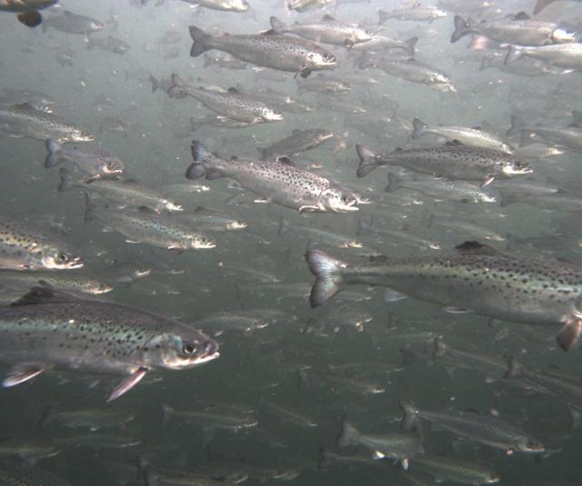
punto 1 punto 2 punto 3 punto 4 punto 1 punto 2 punto 3 punto 4 punto 1 punto 2 punto 3 punto 4 punto 1 punto 2 punto 3 punto 4 punto 1 punto 2 punto 3 punto 4 punto 1 punto 2 punto 3 punto 4 punto 1 punto 2 punto 3 punto 4 punto 1 punto 2 punto 3 punto 4 punto 1 punto 2 punto 3 punto 4 punto 1 punto 2 punto 3 punto 4 punto 1 punto 2 punto 3 punto 4 punto 1 punto 2 punto 3 punto 4 punto 1 punto 2 punto 3 punto 4 punto 1 punto 2 punto 3 punto 4 punto 1 punto 2 punto 3 punto 4 punto 1 punto 2 punto 3 punto 4 punto 1 punto 2 punto 3 punto 4 punto 1 punto 2 punto 3 punto 4 punto 1 punto 2 punto 3 punto 4 punto 1 punto 2 punto 3 punto 4 punto 1 punto 2 punto 3 punto 4 punto 1 punto 2 punto 3 punto 4 punto 1 punto 2 punto 3 punto 4 punto 1 punto 2 punto 3 punto 4 punto 1 punto 2 punto 3 punto 4 punto 1 punto 2 punto 3 punto 4 punto 1 punto 2 punto 3 punto 4 punto 1 punto 2 punto 3 punto 4 punto 1 punto 2 punto 3 punto 4 punto 1 punto 2 punto 3 punto 4 punto 1 punto 2 punto 3 punto 4 punto 1 punto 2 punto 3 punto 4 punto 1 punto 2 punto 3 punto 4 punto 1 punto 2 punto 3 punto 4 punto 1 punto 2 punto 3 punto 4 punto 1 punto 2 punto 3 punto 4 punto 1 punto 2 punto 3 punto 4 punto 1 punto 2 punto 3 punto 4 punto 1 punto 2 punto 3 punto 4 punto 1 punto 2 punto 3 punto 4 punto 1 punto 2 punto 3 punto 4 punto 1 punto 2 punto 3 punto 4 punto 1 punto 2 punto 3 punto 4 punto 1 punto 2 punto 3 punto 4 punto 1 punto 2 punto 3 punto 4 punto 1 punto 2 punto 3 punto 4 punto 1 punto 2 punto 3 punto 4 punto 1 punto 2 punto 3 punto 4 punto 1 punto 2 punto 3 punto 4 punto 1 punto 2 punto 3 punto 4 punto 1 punto 2 punto 3 punto 4 punto 1 punto 2 punto 3 punto 4 punto 1 punto 2 punto 3 punto 4 punto 1 punto 2 punto 3 punto 4 punto 1 punto 2 punto 3 punto 4 punto 1 punto 2 punto 3 punto 4 punto 1 punto 2 punto 3 punto 4 punto 1 punto 2 punto 3 punto 4 punto 1 punto 2 punto 3 punto 4 punto 1 punto 2 punto 3 punto 4 punto 1 punto 2 punto 3 punto 4 punto 1 punto 2 punto 3 punto 4 punto 1 punto 2 punto 3 punto 4 punto 1 punto 2 punto 3 punto 4 punto 1 punto 2 punto 3 punto 4 punto 1 punto 2 punto 3 punto 4 punto 1 punto 2 punto 3 punto 4 punto 1 punto 2 punto 3 punto 4 punto 1 punto 2 punto 3 punto 4 punto 1 punto 2 punto 3 punto 4 punto 1 punto 2 punto 3 punto 4 punto 1 punto 2 punto 3 punto 4 punto 1 punto 2 punto 3 punto 4 punto 1 punto 2 punto 3 punto 4 punto 1 punto 2 punto 3 punto 4 punto 1 punto 2 punto 3 punto 4 punto 1 punto 2 punto 3 punto 4 punto 1 punto 2 punto 3 punto 4 punto 1 punto 2 punto 3 punto 4 punto 1 punto 2 punto 3 punto 4 punto 1 punto 2 punto 3 punto 4 punto 1 punto 2 punto 3 punto 4 punto 1 punto 2 punto 3 punto 4 punto 1 punto 2 punto 3 punto 4 punto 1 punto 2 punto 3 punto 4 punto 1 punto 2 punto 3 punto 4 punto 1 punto 2 punto 3 punto 4 punto 1 punto 2 punto 3 punto 4 punto 1 punto 2 punto 3 punto 4 punto 1 punto 2 punto 3 punto 4 punto 1 punto 2 punto 3 punto 4
20240502_084036_17146...
69 ✓ · 22 FP · 18 FN
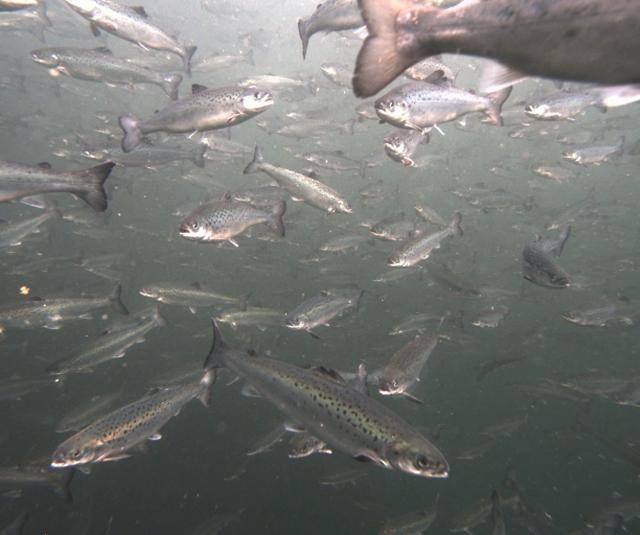
punto 1 punto 2 punto 3 punto 4 punto 1 punto 2 punto 3 punto 4 punto 1 punto 2 punto 3 punto 4 punto 1 punto 2 punto 3 punto 4 punto 1 punto 2 punto 3 punto 4 punto 1 punto 2 punto 3 punto 4 punto 1 punto 2 punto 3 punto 4 punto 1 punto 2 punto 3 punto 4 punto 1 punto 2 punto 3 punto 4 punto 1 punto 2 punto 3 punto 4 punto 1 punto 2 punto 3 punto 4 punto 1 punto 2 punto 3 punto 4 punto 1 punto 2 punto 3 punto 4 punto 1 punto 2 punto 3 punto 4 punto 1 punto 2 punto 3 punto 4 punto 1 punto 2 punto 3 punto 4 punto 1 punto 2 punto 3 punto 4 punto 1 punto 2 punto 3 punto 4 punto 1 punto 2 punto 3 punto 4 punto 1 punto 2 punto 3 punto 4 punto 1 punto 2 punto 3 punto 4 punto 1 punto 2 punto 3 punto 4 punto 1 punto 2 punto 3 punto 4 punto 1 punto 2 punto 3 punto 4 punto 1 punto 2 punto 3 punto 4 punto 1 punto 2 punto 3 punto 4 punto 1 punto 2 punto 3 punto 4 punto 1 punto 2 punto 3 punto 4 punto 1 punto 2 punto 3 punto 4 punto 1 punto 2 punto 3 punto 4 punto 1 punto 2 punto 3 punto 4 punto 1 punto 2 punto 3 punto 4 punto 1 punto 2 punto 3 punto 4 punto 1 punto 2 punto 3 punto 4 punto 1 punto 2 punto 3 punto 4 punto 1 punto 2 punto 3 punto 4 punto 1 punto 2 punto 3 punto 4 punto 1 punto 2 punto 3 punto 4 punto 1 punto 2 punto 3 punto 4 punto 1 punto 2 punto 3 punto 4 punto 1 punto 2 punto 3 punto 4 punto 1 punto 2 punto 3 punto 4 punto 1 punto 2 punto 3 punto 4 punto 1 punto 2 punto 3 punto 4 punto 1 punto 2 punto 3 punto 4 punto 1 punto 2 punto 3 punto 4 punto 1 punto 2 punto 3 punto 4 punto 1 punto 2 punto 3 punto 4 punto 1 punto 2 punto 3 punto 4 punto 1 punto 2 punto 3 punto 4 punto 1 punto 2 punto 3 punto 4 punto 1 punto 2 punto 3 punto 4 punto 1 punto 2 punto 3 punto 4 punto 1 punto 2 punto 3 punto 4 punto 1 punto 2 punto 3 punto 4 punto 1 punto 2 punto 3 punto 4 punto 1 punto 2 punto 3 punto 4 punto 1 punto 2 punto 3 punto 4 punto 1 punto 2 punto 3 punto 4 punto 1 punto 2 punto 3 punto 4 punto 1 punto 2 punto 3 punto 4 punto 1 punto 2 punto 3 punto 4 punto 1 punto 2 punto 3 punto 4 punto 1 punto 2 punto 3 punto 4 punto 1 punto 2 punto 3 punto 4 punto 1 punto 2 punto 3 punto 4 punto 1 punto 2 punto 3 punto 4 punto 1 punto 2 punto 3 punto 4 punto 1 punto 2 punto 3 punto 4 punto 1 punto 2 punto 3 punto 4 punto 1 punto 2 punto 3 punto 4 punto 1 punto 2 punto 3 punto 4 punto 1 punto 2 punto 3 punto 4 punto 1 punto 2 punto 3 punto 4 punto 1 punto 2 punto 3 punto 4 punto 1 punto 2 punto 3 punto 4 punto 1 punto 2 punto 3 punto 4 punto 1 punto 2 punto 3 punto 4 punto 1 punto 2 punto 3 punto 4 punto 1 punto 2 punto 3 punto 4 punto 1 punto 2 punto 3 punto 4 punto 1 punto 2 punto 3 punto 4 punto 1 punto 2 punto 3 punto 4 punto 1 punto 2 punto 3 punto 4 punto 1 punto 2 punto 3 punto 4 punto 1 punto 2 punto 3 punto 4
20240502_084036_17146...
69 ✓ · 17 FP · 23 FN
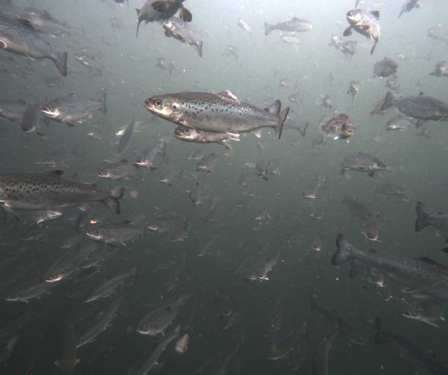
punto 1 punto 2 punto 3 punto 4 punto 1 punto 2 punto 3 punto 4 punto 1 punto 2 punto 3 punto 4 punto 1 punto 2 punto 3 punto 4 punto 1 punto 2 punto 3 punto 4 punto 1 punto 2 punto 3 punto 4 punto 1 punto 2 punto 3 punto 4 punto 1 punto 2 punto 3 punto 4 punto 1 punto 2 punto 3 punto 4 punto 1 punto 2 punto 3 punto 4 punto 1 punto 2 punto 3 punto 4 punto 1 punto 2 punto 3 punto 4 punto 1 punto 2 punto 3 punto 4 punto 1 punto 2 punto 3 punto 4 punto 1 punto 2 punto 3 punto 4 punto 1 punto 2 punto 3 punto 4 punto 1 punto 2 punto 3 punto 4 punto 1 punto 2 punto 3 punto 4 punto 1 punto 2 punto 3 punto 4 punto 1 punto 2 punto 3 punto 4 punto 1 punto 2 punto 3 punto 4 punto 1 punto 2 punto 3 punto 4 punto 1 punto 2 punto 3 punto 4 punto 1 punto 2 punto 3 punto 4 punto 1 punto 2 punto 3 punto 4 punto 1 punto 2 punto 3 punto 4 punto 1 punto 2 punto 3 punto 4 punto 1 punto 2 punto 3 punto 4 punto 1 punto 2 punto 3 punto 4 punto 1 punto 2 punto 3 punto 4 punto 1 punto 2 punto 3 punto 4 punto 1 punto 2 punto 3 punto 4 punto 1 punto 2 punto 3 punto 4 punto 1 punto 2 punto 3 punto 4 punto 1 punto 2 punto 3 punto 4 punto 1 punto 2 punto 3 punto 4 punto 1 punto 2 punto 3 punto 4 punto 1 punto 2 punto 3 punto 4 punto 1 punto 2 punto 3 punto 4 punto 1 punto 2 punto 3 punto 4 punto 1 punto 2 punto 3 punto 4 punto 1 punto 2 punto 3 punto 4 punto 1 punto 2 punto 3 punto 4 punto 1 punto 2 punto 3 punto 4 punto 1 punto 2 punto 3 punto 4 punto 1 punto 2 punto 3 punto 4 punto 1 punto 2 punto 3 punto 4 punto 1 punto 2 punto 3 punto 4 punto 1 punto 2 punto 3 punto 4 punto 1 punto 2 punto 3 punto 4 punto 1 punto 2 punto 3 punto 4 punto 1 punto 2 punto 3 punto 4 punto 1 punto 2 punto 3 punto 4 punto 1 punto 2 punto 3 punto 4 punto 1 punto 2 punto 3 punto 4 punto 1 punto 2 punto 3 punto 4 punto 1 punto 2 punto 3 punto 4 punto 1 punto 2 punto 3 punto 4 punto 1 punto 2 punto 3 punto 4 punto 1 punto 2 punto 3 punto 4 punto 1 punto 2 punto 3 punto 4 punto 1 punto 2 punto 3 punto 4 punto 1 punto 2 punto 3 punto 4 punto 1 punto 2 punto 3 punto 4 punto 1 punto 2 punto 3 punto 4 punto 1 punto 2 punto 3 punto 4 punto 1 punto 2 punto 3 punto 4 punto 1 punto 2 punto 3 punto 4 punto 1 punto 2 punto 3 punto 4 punto 1 punto 2 punto 3 punto 4 punto 1 punto 2 punto 3 punto 4 punto 1 punto 2 punto 3 punto 4 punto 1 punto 2 punto 3 punto 4 punto 1 punto 2 punto 3 punto 4 punto 1 punto 2 punto 3 punto 4 punto 1 punto 2 punto 3 punto 4 punto 1 punto 2 punto 3 punto 4 punto 1 punto 2 punto 3 punto 4 punto 1 punto 2 punto 3 punto 4 punto 1 punto 2 punto 3 punto 4 punto 1 punto 2 punto 3 punto 4 punto 1 punto 2 punto 3 punto 4 punto 1 punto 2 punto 3 punto 4 punto 1 punto 2 punto 3 punto 4 punto 1 punto 2 punto 3 punto 4 punto 1 punto 2 punto 3 punto 4
20240502_084036_17146...
62 ✓ · 24 FP · 11 FN
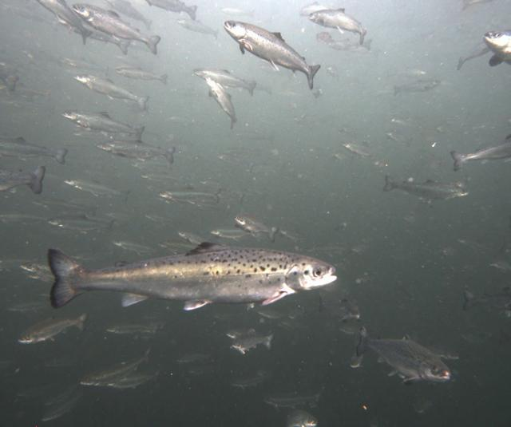
punto 1 punto 2 punto 3 punto 4 punto 1 punto 2 punto 3 punto 4 punto 1 punto 2 punto 3 punto 4 punto 1 punto 2 punto 3 punto 4 punto 1 punto 2 punto 3 punto 4 punto 1 punto 2 punto 3 punto 4 punto 1 punto 2 punto 3 punto 4 punto 1 punto 2 punto 3 punto 4 punto 1 punto 2 punto 3 punto 4 punto 1 punto 2 punto 3 punto 4 punto 1 punto 2 punto 3 punto 4 punto 1 punto 2 punto 3 punto 4 punto 1 punto 2 punto 3 punto 4 punto 1 punto 2 punto 3 punto 4 punto 1 punto 2 punto 3 punto 4 punto 1 punto 2 punto 3 punto 4 punto 1 punto 2 punto 3 punto 4 punto 1 punto 2 punto 3 punto 4 punto 1 punto 2 punto 3 punto 4 punto 1 punto 2 punto 3 punto 4 punto 1 punto 2 punto 3 punto 4 punto 1 punto 2 punto 3 punto 4 punto 1 punto 2 punto 3 punto 4 punto 1 punto 2 punto 3 punto 4 punto 1 punto 2 punto 3 punto 4 punto 1 punto 2 punto 3 punto 4 punto 1 punto 2 punto 3 punto 4 punto 1 punto 2 punto 3 punto 4 punto 1 punto 2 punto 3 punto 4 punto 1 punto 2 punto 3 punto 4 punto 1 punto 2 punto 3 punto 4 punto 1 punto 2 punto 3 punto 4 punto 1 punto 2 punto 3 punto 4 punto 1 punto 2 punto 3 punto 4 punto 1 punto 2 punto 3 punto 4 punto 1 punto 2 punto 3 punto 4 punto 1 punto 2 punto 3 punto 4 punto 1 punto 2 punto 3 punto 4 punto 1 punto 2 punto 3 punto 4 punto 1 punto 2 punto 3 punto 4 punto 1 punto 2 punto 3 punto 4 punto 1 punto 2 punto 3 punto 4 punto 1 punto 2 punto 3 punto 4 punto 1 punto 2 punto 3 punto 4 punto 1 punto 2 punto 3 punto 4 punto 1 punto 2 punto 3 punto 4 punto 1 punto 2 punto 3 punto 4 punto 1 punto 2 punto 3 punto 4 punto 1 punto 2 punto 3 punto 4 punto 1 punto 2 punto 3 punto 4 punto 1 punto 2 punto 3 punto 4 punto 1 punto 2 punto 3 punto 4 punto 1 punto 2 punto 3 punto 4 punto 1 punto 2 punto 3 punto 4 punto 1 punto 2 punto 3 punto 4 punto 1 punto 2 punto 3 punto 4 punto 1 punto 2 punto 3 punto 4 punto 1 punto 2 punto 3 punto 4 punto 1 punto 2 punto 3 punto 4 punto 1 punto 2 punto 3 punto 4 punto 1 punto 2 punto 3 punto 4
20240502_084036_17146...
48 ✓ · 13 FP · 15 FN
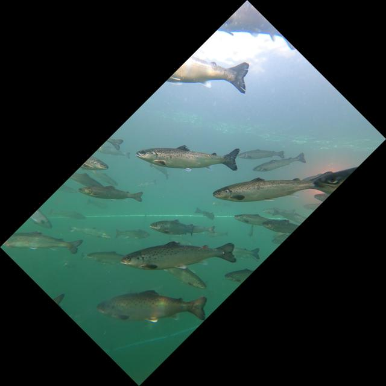
punto 1 punto 2 punto 3 punto 4 punto 1 punto 2 punto 3 punto 4 punto 1 punto 2 punto 3 punto 4 punto 1 punto 2 punto 3 punto 4 punto 1 punto 2 punto 3 punto 4 punto 1 punto 2 punto 3 punto 4 punto 1 punto 2 punto 3 punto 4 punto 1 punto 2 punto 3 punto 4 punto 1 punto 2 punto 3 punto 4 punto 1 punto 2 punto 3 punto 4 punto 1 punto 2 punto 3 punto 4 punto 1 punto 2 punto 3 punto 4 punto 1 punto 2 punto 3 punto 4 punto 1 punto 2 punto 3 punto 4 punto 1 punto 2 punto 3 punto 4 punto 1 punto 2 punto 3 punto 4 punto 1 punto 2 punto 3 punto 4 punto 1 punto 2 punto 3 punto 4 punto 1 punto 2 punto 3 punto 4 punto 1 punto 2 punto 3 punto 4 punto 1 punto 2 punto 3 punto 4 punto 1 punto 2 punto 3 punto 4 punto 1 punto 2 punto 3 punto 4 punto 1 punto 2 punto 3 punto 4 punto 1 punto 2 punto 3 punto 4 punto 1 punto 2 punto 3 punto 4
GH010031_frame_700.jpg
25 ✓ · 1 FP · 23 FN
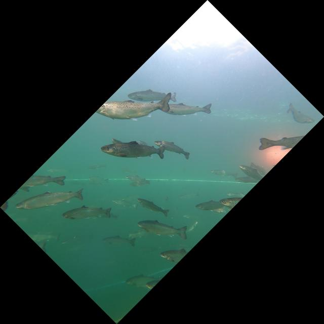
punto 1 punto 2 punto 3 punto 4 punto 1 punto 2 punto 3 punto 4 punto 1 punto 2 punto 3 punto 4 punto 1 punto 2 punto 3 punto 4 punto 1 punto 2 punto 3 punto 4 punto 1 punto 2 punto 3 punto 4 punto 1 punto 2 punto 3 punto 4 punto 1 punto 2 punto 3 punto 4 punto 1 punto 2 punto 3 punto 4 punto 1 punto 2 punto 3 punto 4 punto 1 punto 2 punto 3 punto 4 punto 1 punto 2 punto 3 punto 4 punto 1 punto 2 punto 3 punto 4 punto 1 punto 2 punto 3 punto 4 punto 1 punto 2 punto 3 punto 4 punto 1 punto 2 punto 3 punto 4 punto 1 punto 2 punto 3 punto 4 punto 1 punto 2 punto 3 punto 4 punto 1 punto 2 punto 3 punto 4 punto 1 punto 2 punto 3 punto 4 punto 1 punto 2 punto 3 punto 4 punto 1 punto 2 punto 3 punto 4 punto 1 punto 2 punto 3 punto 4 punto 1 punto 2 punto 3 punto 4 punto 1 punto 2 punto 3 punto 4 punto 1 punto 2 punto 3 punto 4 punto 1 punto 2 punto 3 punto 4 punto 1 punto 2 punto 3 punto 4 punto 1 punto 2 punto 3 punto 4 punto 1 punto 2 punto 3 punto 4 punto 1 punto 2 punto 3 punto 4
GH010031_frame_1200.jpg
28 ✓ · 3 FP · 19 FN
punto 1 punto 2 punto 3 punto 4 punto 1 punto 2 punto 3 punto 4 punto 1 punto 2 punto 3 punto 4 punto 1 punto 2 punto 3 punto 4 punto 1 punto 2 punto 3 punto 4 punto 1 punto 2 punto 3 punto 4 punto 1 punto 2 punto 3 punto 4 punto 1 punto 2 punto 3 punto 4 punto 1 punto 2 punto 3 punto 4 punto 1 punto 2 punto 3 punto 4 punto 1 punto 2 punto 3 punto 4 punto 1 punto 2 punto 3 punto 4 punto 1 punto 2 punto 3 punto 4 punto 1 punto 2 punto 3 punto 4 punto 1 punto 2 punto 3 punto 4 punto 1 punto 2 punto 3 punto 4 punto 1 punto 2 punto 3 punto 4 punto 1 punto 2 punto 3 punto 4 punto 1 punto 2 punto 3 punto 4 punto 1 punto 2 punto 3 punto 4 punto 1 punto 2 punto 3 punto 4 punto 1 punto 2 punto 3 punto 4 punto 1 punto 2 punto 3 punto 4 punto 1 punto 2 punto 3 punto 4 punto 1 punto 2 punto 3 punto 4 punto 1 punto 2 punto 3 punto 4 punto 1 punto 2 punto 3 punto 4 punto 1 punto 2 punto 3 punto 4 punto 1 punto 2 punto 3 punto 4 punto 1 punto 2 punto 3 punto 4 punto 1 punto 2 punto 3 punto 4 punto 1 punto 2 punto 3 punto 4 punto 1 punto 2 punto 3 punto 4 punto 1 punto 2 punto 3 punto 4
GH010031_frame_1100.jpg
29 ✓ · 5 FP · 15 FN
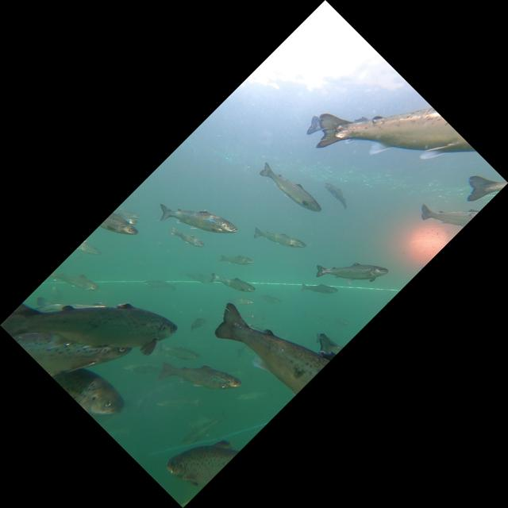
punto 1 punto 2 punto 3 punto 4 punto 1 punto 2 punto 3 punto 4 punto 1 punto 2 punto 3 punto 4 punto 1 punto 2 punto 3 punto 4 punto 1 punto 2 punto 3 punto 4 punto 1 punto 2 punto 3 punto 4 punto 1 punto 2 punto 3 punto 4 punto 1 punto 2 punto 3 punto 4 punto 1 punto 2 punto 3 punto 4 punto 1 punto 2 punto 3 punto 4 punto 1 punto 2 punto 3 punto 4 punto 1 punto 2 punto 3 punto 4 punto 1 punto 2 punto 3 punto 4 punto 1 punto 2 punto 3 punto 4 punto 1 punto 2 punto 3 punto 4 punto 1 punto 2 punto 3 punto 4 punto 1 punto 2 punto 3 punto 4 punto 1 punto 2 punto 3 punto 4 punto 1 punto 2 punto 3 punto 4 punto 1 punto 2 punto 3 punto 4 punto 1 punto 2 punto 3 punto 4 punto 1 punto 2 punto 3 punto 4 punto 1 punto 2 punto 3 punto 4 punto 1 punto 2 punto 3 punto 4
GH010031_frame_500.jpg
20 ✓ · 4 FP · 16 FN
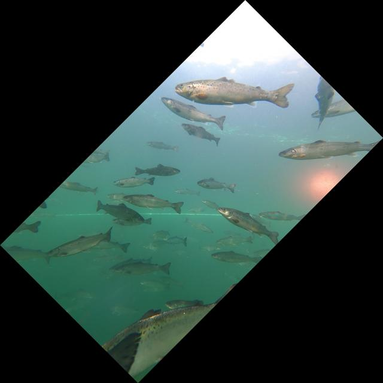
punto 1 punto 2 punto 3 punto 4 punto 1 punto 2 punto 3 punto 4 punto 1 punto 2 punto 3 punto 4 punto 1 punto 2 punto 3 punto 4 punto 1 punto 2 punto 3 punto 4 punto 1 punto 2 punto 3 punto 4 punto 1 punto 2 punto 3 punto 4 punto 1 punto 2 punto 3 punto 4 punto 1 punto 2 punto 3 punto 4 punto 1 punto 2 punto 3 punto 4 punto 1 punto 2 punto 3 punto 4 punto 1 punto 2 punto 3 punto 4 punto 1 punto 2 punto 3 punto 4 punto 1 punto 2 punto 3 punto 4 punto 1 punto 2 punto 3 punto 4 punto 1 punto 2 punto 3 punto 4 punto 1 punto 2 punto 3 punto 4 punto 1 punto 2 punto 3 punto 4 punto 1 punto 2 punto 3 punto 4 punto 1 punto 2 punto 3 punto 4 punto 1 punto 2 punto 3 punto 4 punto 1 punto 2 punto 3 punto 4 punto 1 punto 2 punto 3 punto 4 punto 1 punto 2 punto 3 punto 4 punto 1 punto 2 punto 3 punto 4 punto 1 punto 2 punto 3 punto 4 punto 1 punto 2 punto 3 punto 4 punto 1 punto 2 punto 3 punto 4 punto 1 punto 2 punto 3 punto 4 punto 1 punto 2 punto 3 punto 4 punto 1 punto 2 punto 3 punto 4 punto 1 punto 2 punto 3 punto 4 punto 1 punto 2 punto 3 punto 4 punto 1 punto 2 punto 3 punto 4 punto 1 punto 2 punto 3 punto 4 punto 1 punto 2 punto 3 punto 4 punto 1 punto 2 punto 3 punto 4 punto 1 punto 2 punto 3 punto 4 punto 1 punto 2 punto 3 punto 4 punto 1 punto 2 punto 3 punto 4 punto 1 punto 2 punto 3 punto 4
GH010031_frame_800.jpg
38 ✓ · 3 FP · 16 FN